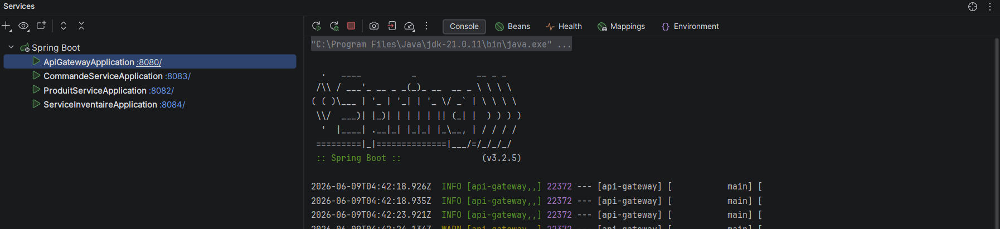
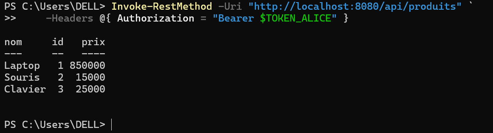
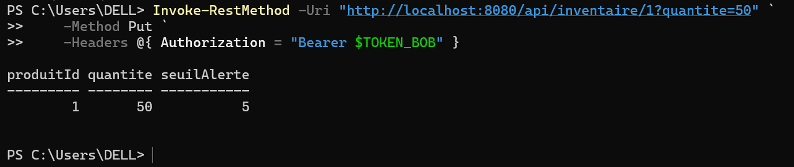
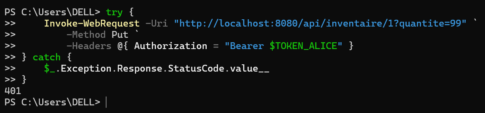
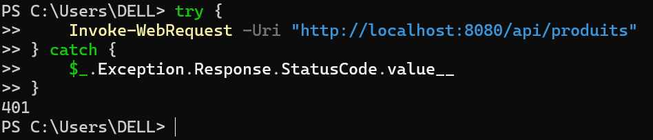
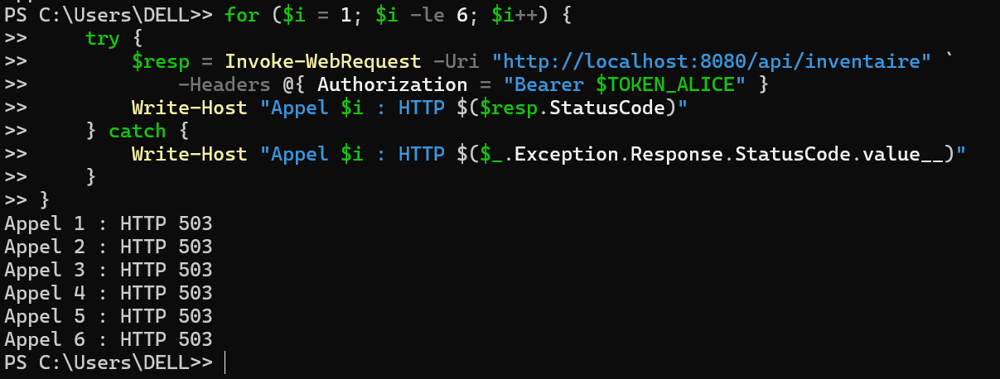
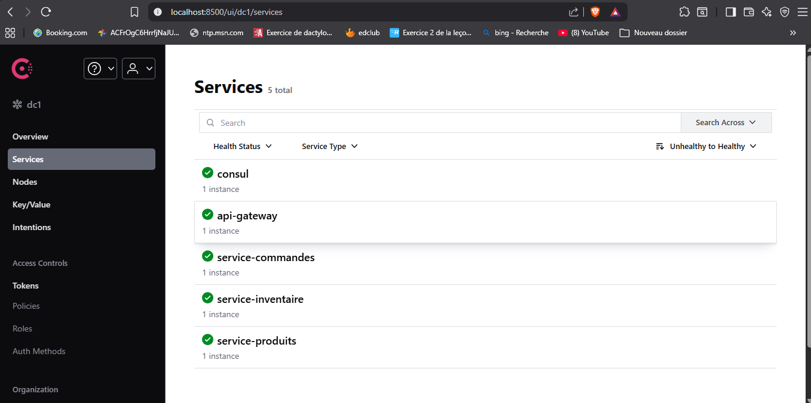
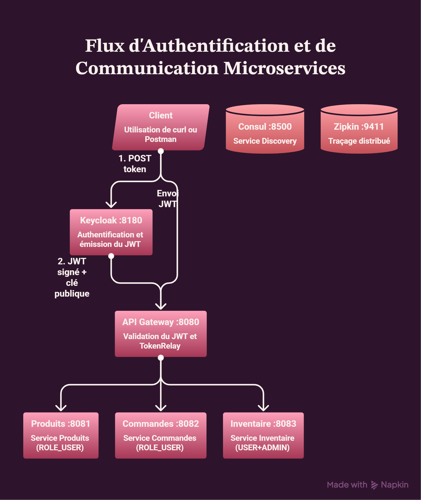
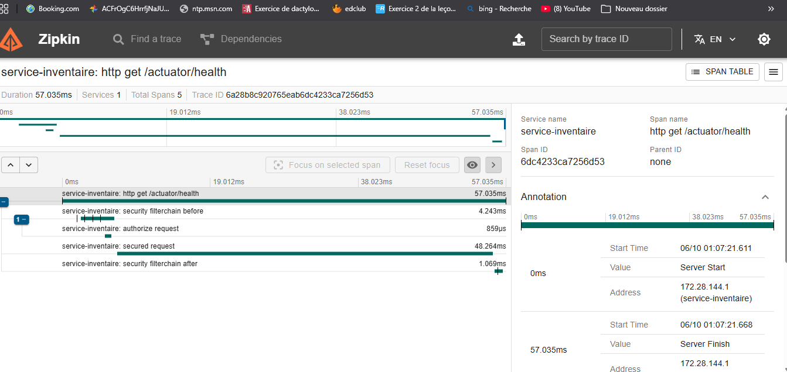

Rapport du projet TP Keyloak
Aliou Ba, ing 2 informatique, P33 2
Voici le sommaire du
Question Rapport - Q2
- En observant le payload, on peut identifier et expliquer au moins 5 champs:
- exp: expiration du token, exprimée en secondes depuis l’époque Unix. C’est la date/heure à laquelle le token cesse d’être valide.
- iat : issued at, moment où le token a été émis.
- iss: issuer, l’autorité qui a généré le token (ici ton serveur Keycloak, http://localhost:8180/realms/tp-microservices).
- aud: audience, la cible prévue du token (ici account).
- sub : subject, identifiant unique de l’utilisateur (UUID).
- Le champ exp indique la date d’expiration.
Dans notre exemple, il est fixé à 1780925386 (timestamp Unix).
Cela correspond à environ 5 minutes après l’émission (iat).
Pour modifier cette durée dans Keycloak :
On Va dans Clients → [ton client] → Settings.
Dans la section Advanced Settings, on change la valeur Access Token Lifespan.
On peux aussi ajuster la durée du Refresh Token dans Realm Settings → Tokens.
-
- Alice peut avoir des rôles comme ROLE_USER.
- Bob dans ton exemple a des rôles supplémentaires (ROLE_ADMIN, offline_access, uma_authorization).
La différence est que Bob a des privilèges administratifs et des autorisations élargies, alors qu’Alice n’a que des rôles standards. Cela reflète la gestion des permissions dans Keycloak.
-
- Un token expiré renvoie 401 Unauthorized.
- Pour éviter de ressaisir le mot de passe, on utilise le refresh token.
- Il est fourni en même temps que l’access token.
- On l’envoie à /protocol/openid-connect/token avec grant_type=refresh_token.
Q3 Sécurité des Services
-
Spring Security intercepte la requête avant qu'elle atteigne le contrôleur.
Comme aucun token JWT n'est présent dans l'en-tête Authorization, le filtre OAuth2 Resource Server rejette la requête immédiatement avec un 401.
-
Avec le token d'Alice (ROLE_USER uniquement), un appel PUT /inventaire/1 retourne HTTP 403 Forbidden.
La requête passe le premier filtre HTTP (Alice a bien ROLE_USER), mais @PreAuthorize("hasRole('ADMIN')") sur la méthode mettreAJour() refuse l'accès car Alice n'a pas ROLE_ADMIN. C'est le deuxième niveau de sécurité qui bloque.
-
hasRole('ADMIN') et hasAuthority('ROLE_ADMIN') sont équivalents en pratique. La différence est que hasRole() ajoute automatiquement le préfixe ROLE_ avant de comparer — donc hasRole('ADMIN') cherche en interne ROLE_ADMIN. Avec hasAuthority(), il faut écrire le nom complet ROLE_ADMIN soi-même. Dans notre JwtRoleConverter, on préfixe déjà les rôles avec ROLE_, donc les deux fonctionneront. hasRole() est plus lisible, hasAuthority() est plus explicite.
-
Valider uniquement à la Gateway crée un single point of failure de sécurité. Si un service est accessible directement (accès réseau interne, bug de configuration, autre route), il n'y a plus aucune protection. En validant dans chaque service, même si la Gateway est contournée, le service refuse les requêtes non autorisées. Scénario critique : un développeur teste directement https://localhost:8083/inventaire/1 en PUT sans passer par la Gateway — sans validation locale, il peut modifier le stock sans être ADMIN.
Etape 3: API Gateway sécurisée
6.1 Configuration du projet api-gateway
Question Rapport - Q4: API Gateway et securite
- Le filtre TokenRelay= récupère le token JWT présent dans l'en-tête Authorization: Bearer ... de la requête entrante, et le recopie automatiquement dans la requête transmise au service en aval. Sans lui, les services recevraient des requêtes sans token et retourneraient 401. Il est indispensable car la Gateway est le seul point d'entrée — les services ne reçoivent le token que si la Gateway le propage
- oauth2-resource-server : permet à la Gateway de valider le JWT entrant du client (vérifier la signature, l'expiration, les droits). C'est le rôle "serveur de ressources".
oauth2-client : permet à la Gateway de s'authentifier elle-même auprès de Keycloak si besoin (flux client_credentials pour des appels inter-services). C'est aussi ce qui permet au filtre TokenRelay de fonctionner correctement avec le contexte de sécurité réactif.
- C'est la Gateway qui répond avec HTTP 401. Keycloak n'est pas contacté. La Gateway vérifie localement la présence et la validité du token (via la clé publique Keycloak téléchargée au démarrage). Si aucun token n'est fourni, la Gateway rejette immédiatement sans aucune communication avec Keycloak.
-
- Bob → Keycloak : Bob s'authentifie, Keycloak retourne un JWT signé contenant ROLE_USER et ROLE_ADMIN
- Bob → Gateway (:8080) : Bob envoie PUT /api/inventaire/1?quantite=50 avec Authorization: Bearer
- Gateway : valide la signature du JWT (clé publique Keycloak), vérifie que l'utilisateur est authentifié → OK
- Gateway → Service Inventaire (:8083) : filtre TokenRelay propage le token, StripPrefix transforme /api/inventaire/1 en /inventaire/1
- Service Inventaire : valide à nouveau le JWT, vérifie hasRole('USER') → OK, puis @PreAuthorize("hasRole('ADMIN')") → Bob a ROLE_ADMIN → OK
- Service Inventaire → Bob : retourne HTTP 200 avec le stock mis à jour
Etape 4: Scenarios de test complets
7.1 Démarrage de tous les composants
Je démarre tous les composants directement sur intellij

-
Scénario A - Alice consulte les produits

Scénario A (200) : Alice a ROLE_USER, GET /produits l'exige → accès accordé
Scénario B - Bob met à jour le stock

Scénario B (200) : Bob a ROLE_ADMIN, PUT /inventaire l'exige → accès accordé
Scénario C Alice essaie de modifier le stock

Scénario C (403) : Alice a ROLE_USER mais PUT /inventaire exige ROLE_ADMIN → refus d'autorisation
Scénario D

Scénario D (401) : aucun token fourni → la Gateway refuse avant tout traitement
Scénario E - Service tombe, fallback active

Scénario E (503) : le service est down, après 5 échecs le circuit breaker s'ouvre et retourne le fallback
-
C'est la Gateway qui retourne le 401. Le Service Produits n'est jamais contacté.
Comment le vérifier :
# Appel sans token via Gateway
curl -v http://localhost:8080/api/produits
# Appel direct au service (sans Gateway) — aussi 401 mais indépendamment
curl -v http://localhost:8081/produits
Les logs du Service Produits ne montrent aucune requête reçue lors du scénario D via Gateway.
-
HTTP 401 Unauthorized : l'utilisateur n'est pas identifié — aucun token, token expiré, token invalide. "Qui êtes-vous ?"
HTTP 403 Forbidden : l'utilisateur est identifié mais n'a pas les droits pour cette ressource. "Je sais qui vous êtes, mais vous n'avez pas accès."
Dans ce TP : 401 → appel sans token (scénario D) / 403 → Alice tente PUT inventaire sans ROLE_ADMIN (scénario C).
-
10 secondes.
C'est la configuration waitDurationInOpenState: 10s dans application.yml de la Gateway.
Après 10s, le circuit passe en état HALF-OPEN et laisse passer une requête test. Si elle réussit, le circuit se referme (CLOSED). Si elle échoue, il reste OPEN 10s de plus.
Je capture les services sur Consul

Question de synthèse du rapport
-
Dessin de l'architecture avec Napkin

-
Approche A vs Approche B
|
Approche A |
Approche B |
| Avantage |
Simplicité, un seul endroit à configurer |
Sécurité en profondeur (appelé defense-in-depth) |
| Risque |
Si un service est accessible directement, aucune protection |
Configuration dupliquée, plus complexe |
- Le refresh token est un token de longue durée (ex: 30 minutes à plusieurs heures) retourné avec l'access token. Quand l'access token expire (5 minutes par défaut dans Keycloak), le client envoie le refresh token à Keycloak pour obtenir un nouvel access token sans redemander le mot de passe. L'utilisateur reste connecté de façon transparente.
- Le payload d'un JWT est simplement encodé en Base64, pas chiffré. N'importe qui interceptant le token peut lire son contenu. La signature garantit l'intégrité (personne ne peut le modifier) mais pas la confidentialité.
Ne jamais mettre dans un JWT : mot de passe, numéro de carte bancaire, données médicales, informations personnelles sensibles (RGPD). On y met uniquement : identifiant utilisateur, rôles, email — des données non sensibles nécessaires à l'autorisation.
Keycloak en profondeur
-
Realm role : global à tout le realm, visible par tous les clients. Ex: ROLE_USER, ROLE_ADMIN dans ce TP.
Client role : spécifique à un seul client OAuth2. Ex: gateway-client:read-only.
Utiliser Realm role quand le rôle est partagé entre plusieurs services. Utiliser Client role quand le rôle est propre à une seule application (ex: rôle editor uniquement dans un CMS).
- Dans Keycloak : Users → sélectionner l'utilisateur → Sessions → Sign out all sessions. Cela invalide les sessions actives et les refresh tokens.
Limite avec les JWT : les access tokens déjà émis restent valides jusqu'à leur expiration (5 min par défaut) car les services les vérifient localement sans contacter Keycloak. Pour une révocation immédiate, il faut soit réduire la durée des tokens, soit implémenter une liste noire (token introspection endpoint).
-
- Application web avec interface de connexion → Authorization Code Flow (avec PKCE). L'utilisateur est redirigé vers Keycloak, s'authentifie, puis est redirigé vers l'app avec un code.
- Communication serveur-à-serveur → Client Credentials Flow. Pas d'utilisateur impliqué, le service s'authentifie avec son client_id + client_secret.
- Tests en ligne de commande (ce TP) → Resource Owner Password Flow. L'utilisateur envoie directement son login/password. Simple pour les tests, déconseillé en production.
-
- Plusieurs instances Keycloak derrière un load balancer (ex: Nginx, HAProxy)
- Base de données partagée et répliquée (PostgreSQL en cluster)
- Sessions partagées via Infinispan (cache distribué intégré à Keycloak)
- Déploiement sur Kubernetes avec plusieurs replicas et health checks
- Certificats SSL/TLS sur le load balancer
Q8 Microservices et SOA
Q8.1 Comparaison avec le TP précédent (SOA + GraphQL)
- Commun : API Gateway comme point d'entrée unique, services REST indépendants, circuit breaker Resilience4j.
- Nouveau dans ce TP : Keycloak SSO, JWT, TokenRelay, Consul pour le service discovery et Zipkin pour le tracing distribué.
- Le TP précédent utilisait des URLs codées en dur ; ici Consul gère la découverte dynamiquement.
Q8.2 Communication inter-service synchrone vs asynchrone ?
La communication HTTP REST est synchrone : le service appelant attend la réponse avant de continuer.
Si le service appelé est lent ou indisponible, l'appelant est bloqué.
Une alternative consiste à utiliser un broker de messages comme Kafka ou RabbitMQ.
Le Service Inventaire publie un événement et le Service Produits le consomme lorsqu'il est disponible.
Q8.3 Intégrer un Service Notifications
- Port : 8084
- Sécurité : OAuth2 Resource Server avec ROLE_USER
- Communication : Kafka ou RabbitMQ
- Enregistrement dans Consul : service-notifications
id: route-notifications
uri: lb://service-notifications
predicates:
- Path=/api/notifications/**
filters:
- StripPrefix=1
- TokenRelay=
Q8.4 Monolithe sécurisé vs microservices sécurisés
Dans un monolithe, il existe un seul point d'entrée et une surface d'attaque réduite.
Dans une architecture microservices, chaque service expose potentiellement son propre port.
C'est pourquoi chaque service doit valider le JWT même si la Gateway l'a déjà vérifié.
Q9 Service Discovery et Consul
Q9.1 Client-side vs Server-side discovery ?
- Client-side : le client interroge Consul et choisit l'instance.
- Server-side : un proxy ou load balancer effectue cette tâche.
Q9.2 Qui interroge Consul ?
La Gateway interroge Consul via Spring Cloud LoadBalancer lorsqu'elle rencontre
une URL de type lb://service-produits.
Q9.3 Capture Consul
http://localhost:8500
Services :
- api-gateway
- service-produits
- service-commandes
- service-inventaire
Q9.4 Temps de détection d'un service down
Consul détecte généralement la panne après environ 10 secondes,
selon la configuration du health check.
Q9.5 Avantages de lb://service-produits
- Répartition automatique de charge.
- Mise à jour automatique des adresses via Consul.
- Aucune URL codée en dur.
Q10 Observabilité et Tracing
Q10.1 Log vs Métrique vs Trace
- Log : événement précis à un instant donné.
- Métrique : données chiffrées agrégées.
- Trace : parcours complet d'une requête entre services.
Q10.2 TraceId
Le TraceId est un identifiant unique attribué à une requête.
Il est propagé via les en-têtes HTTP B3.
X-B3-TraceId: abc123def456
X-B3-SpanId: 111aaa222bbb
Q10.3 Observer une trace dans Zipkin
curl -H "Authorization: Bearer TOKEN" \
http://localhost:8080/api/inventaire/1
Puis ouvrir :
http://localhost:9411

La trace montre le passage de la requête à travers la Gateway puis le Service Inventaire.
Q10.4 Pourquoi sampling.probability: 1.0 uniquement en développement ?
Avec une valeur de 1.0, toutes les requêtes sont tracées.
Cela augmente la consommation CPU, réseau et stockage.
En production, on utilise généralement entre 1 % et 10 %.
Q10.5 Investiguer une lenteur avec Zipkin
- Filtrer les traces concernées.
- Trier par durée.
- Ouvrir les traces lentes.
- Identifier le span le plus long.
- Comparer avec des traces normales.
- Corréler avec les logs grâce au TraceId.